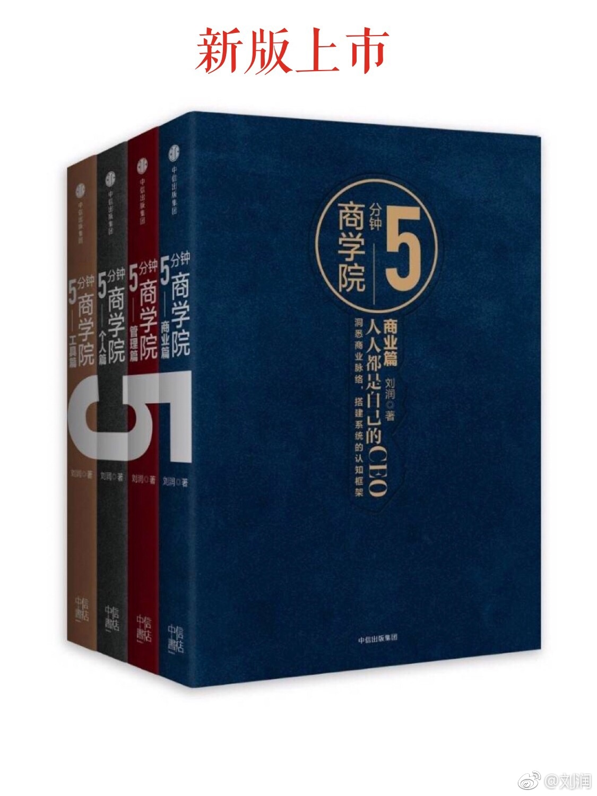

@刘润:
很高兴，《5分钟商学院》的书籍上市后，在不到3个月时间里，印数已经超过28万册，非常感谢大家的支持，能为你们做一套“商业的新华字典”，是我最大的荣幸。
现在，《5分钟商学院》商业篇的新版也上市预售了，为了感谢大家，【转发+点赞】这条微博：
抽一位送价值1800元的润米登机箱（我用的也是这款）；
抽十位送《5分钟商学院》商业篇新版书；
《5分钟商学院》商业篇新版购买链接：
当当： 网页链接
网页链接
京东：网页链接
博库：5分钟商学院·商业篇(市场版) 博库网
亚马逊：网页链接
中信书店：预售 5分钟商学院·商业篇(市场版)逻辑思维 刘润 商业管理消费心理学企业经营管理 行为经济
现在，《5分钟商学院》商业篇的新版也上市预售了，为了感谢大家，【转发+点赞】这条微博：
抽一位送价值1800元的润米登机箱（我用的也是这款）；
抽十位送《5分钟商学院》商业篇新版书；
《5分钟商学院》商业篇新版购买链接：
当当：
京东：
博库：
亚马逊：
中信书店：
- 